Best Practice for your Application
A best practice is a method or technique that has been generally accepted as superior to any alternatives because it produces results that are superior to those achieved by other means or because it has become a standard way of doing things.
Snippets that make you faster
Ready to use common constructs that you can insert into your code to solve specific problems.
Common architecture and design Pattern
An pattern is a general, reusable solution to a commonly occurring problem in software architecture or -design within a given context. It's not a finished design but it is a template for how to solve a problem that can be used in many different situations.
Coding Best Practics
This Chapter focus on best practics about writing source code.
General
- Whenever possible use existing Pattern and Standards within your System Components. This doesn’t mean that you should use (common) Frameworks. Standards and Pattern should have a non Framework / Library focus and brings in battle proofen solutions.
- Try to achieve Clean Code with KISS, YAGNI and DRY. Always do a refactoring before completion of work. All this results in a maintainable code base.
- Don’t use Developer Teams with more than 6 Persons to stay effective.
- Highly automate all your tasks e.g. builds, tests and deployments to be efficient.
- Run static code analyses and linter your code to increase maintainability.
- Try to reduce complexity by building solutions that (a) focus on a low number of external dependencies and (b) solves only the existing requirements and not more predicted ones (less is more).
- Document everything to the extent that anyone else can familiarize themselves with the topic shortly. Take special care on public visible Components.
- Structure your code. Use modules (e.g. Java Projects) for access seperation and packages to help others understand the logical application structure.
- Never hide potential errors. (Re)throw (own) Exceptions with appropriate messages.
- Cover 'not null' Design. Use empty Collections, prefer .valueOf() instead of .toString(), prefer the known not null value on left side of .equals() calls. Never return null use Optional if reasonable. Never accept null as parameter use Objects.requireNonNull() to fail fast in this case. Set @NonNullApi in package-info.java to get hints in your IDE for this cases.
Configuration
- Externalize all your configuration (e.g. via Properties file) for having a single point of truth.
- Make it possible to overwrite configurations after deployment to adapt on different environments.
Security
- Use proofen external libraries and applications for solving security requirements (e.g. authentication).
- Focus on security solutions that are transparent to the application (e.g. Database internal encryption, Transportlayer security like HTTPS).
- Implement validation checks always on backend side. Inside the frontend you can add them too but only for a better user experience.
- Protect sensitive and personal data (e.g. encryption, anonymization, no logging) .
Communication
- Abstract the communication protocol (e.g. http) within your application to ensure interchangeability.
- Reduce and Compress your communication data to reduce size and network latency.
- Provide a version number in your external APIs to allow changes without breaking client contracts.
- Document your APIs precisely and provide a export that can be used for clients as a contract-first-approach.
- Don’t require state. Stateless applications can be scaled much better.
- Use Publish-Subscribe Pattern for notifications.
Concurrency
- Use only immutable objects (e.g. with Builders) and threadsafe classes.
- For more complex behaviour make use of the Actor Model.
UI
- Should be looking attractive to be more trustworthy for users.
- Has to be fast to meet the users expectations.
- Support multi language to be accessible by a wide audience.
- Provide a user manual that shows users how to use available features.
Backend
- Support multitenancy down to the storage level (e.g. use seperate database for each tenant or deploy for each tenant a individual environment).
- Respect the principle of data minimisation to be compliant with GDPR.
Testing
- Write Unittests to test for expected domain behaviour. Measure your code coverage.
- Write Integrationtests to test for expected behaviour between Modules.
- Write Architecturetests to detect architectural defects (e.g. naming conventions, layer dependencies).
Deployment and Runtime
- Make your application easy to install (e.g. no manual steps / SaaS, provide a installation manual) .
- Make your application easy to update (e.g. auto. update checks, no manual steps, rollback possibility).
- Support backup and recovery (e.g. auto. regular backups, provide a backup and recover manual)
Monitoring
- Make flows in the application tracable (e.g. use unique ID, use distributed tracing solutions) to ease error reproduction.
- Provide application health checks to enable the underlying Platform to handle accordingly to the actual state.
Snippets
This Chapter contains usefull source code examples for common development problems.
Spring
Sample Spring REST App
Sample Spring Data App
Sample Spring JSON Logger App
Pattern
Architecture Pattern
This Chapter focus on pattern for whole software systems. Its focus is on a higher level of abstraction.
Base Architecture Styles
- Layered (Monolith, Multitier, n-tier, MVC, Client-Server)
- Microkernel (Plugin architecture)
- Service-based (Service-oriented, Microservice, Distributed)
- Space-based
- Event-driven (CQRS / Event Sourcing)
- Serverless
Domain Driven Design (DDD)
Clean Code
Arc42
Design Pattern
This Chapter focus on pattern for common occurring problems while development. It’s focus is on a lower level of abstraction.
Package principles
General Responsibility Assignment Software Principles (GRASP)
Single-responsibility, Open–closed, Liskov substitution, Interface segregation, Dependency inversion Principle (SOLID)
Inheritance
Gang of Four (GoF)
12 Factor App
Philipp Hauer's Coding Wisdoms
Serverless Patterns
Misc
This Chapter contains usefull other stuff.
IntelliJ IDEA
Hot Keys
| Action | Shortcut |
|---|---|
| Auto help | Alt + Enter |
| Show method signature | Strg + Q |
| Search | Shift + Shift |
| Navigate between tabs | Alt + Left/Right |
| Select block | Strg + W |
| Go to declaration | Strg + B |
| Go back | Strg + Alt + Left |
| Format code | Strg + Alt + L |
| Rename | Shift + F6 |
| Search and Replace | Strg + R |
| New file | Strg + Alt + Insert |
| Autogeneration | Alt + Insert |
| Code templates | Strg + J |
| Run Debug | Shift + F9 |
| Debug step | F8 |
| Refactoring - extract to constant | Strg + Alt + C |
| Refactoring - extract to method | Strg + Alt + M |
| Refactoring - inline | Strg + Alt + N |
| Commit and push | Strg+K |
Settings
| Behaviour | Steps to activate |
|---|---|
| Comment code with Shift + 7 for german keyboard layout | Open the Settings (Strg + Alt + S). Navigate to "Keymap". Navigate to "Main menu -> Code -> Folding -> Comment with Line Comment". Set the Shortcut to "Strg + 7" (replace other assignments). |
| Auto. import unambiguous classes | Open the Settings (Strg + Alt + S). Navigate to "Editor -> General -> Auto Import". Check "Add unambiguous imports on the fly". |
| Show NotNull assignments as errors | Open the Settings (Strg + Alt + S). Navigate to "Editor -> Inspections". Navigate to "Java -> Probable bugs -> Constants conditions & exceptions" and set the Severity to "Error". |
| Activate hot reload of classes while debugging (HotSwap) with shortcut "Ctrl + S" |
Open the Search (Shift Shift) and type "Registry" and open it. Check "compiler.automake.allow.when.app.running". Open the Settings (Strg + Alt + S). Navigate to "Keymap". Navigate to "Plug-ins -> Java -> Rebuild". Set the Shortcut to "Ctrl + S" (replace other assignments). |
Plugins
Docker
| Action | Command |
|---|---|
| Show all images | docker images |
| List all container | docker ps -a |
| Build docker image | docker build . |
| Build docker image without extended log limit [output clipped, log limit 1MiB reached] | docker buildx create --use --name larger_log --driver-opt env.BUILDKIT_STEP_LOG_MAX_SIZE=50000000 docker buildx build . |
| Open interactive shell on a container | docker exec -it <container-id> /bin/bash |
| Extract a file from a container that fails to start | docker run --rm --entrypoint /bin/sh image_name -c "cat /path/filename" > output_filename |
| Stop all running container | docker stop $(sudo docker ps -aq) |
| Remove all stopped container | docker system prune -f --volumes |
| Remove all stopped container and images | docker system prune -a -f |
Git
| Action | Command |
|---|---|
| Clone - Get a local copy of a remote source | git clone url |
| Create a feature branch to work on | git checkout -b feature_name |
| Add files to the feature branch | git add file |
| Stage & commmit - fix a set of related changes | git commit -a -m “message in present tense” |
| Push the commits to the remote server | git push origin feature_name |
Gitpod online IDE
Want to change some source code on GitHub but have no local IDE running? Simply use Gitpod to start an Visual Code based online IDE directly from the GitHub repository of interest: Just add http://gitpod.io/# before your GitHub repository url.